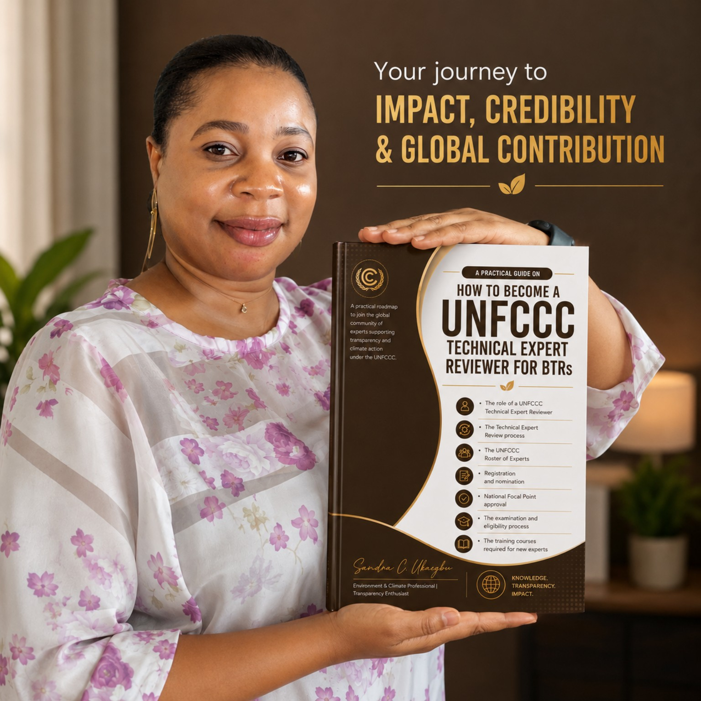

Confused about the pathway to becoming a Technical Expert Reviewer for Biennial Transparency Reports? This practical guide breaks the process into clear, understandable steps.
Get Your Copy See What's Inside
If you are an environmental professional, climate-policy student or researcher, GHG inventory practitioner, or an aspiring UNFCCC reviewer, the process can initially feel complicated. This guide brings the key stages together in one place.
Learn what a UNFCCC Technical Expert Reviewer does and why the role matters for transparency and reporting.
Build a clearer picture of BTRs, GHGs, NDCs and the Technical Expert Review process.
Follow the key stages from preparation through nomination, training and examination.
Understand the process and navigate the relevant UNFCCC information with greater confidence.
For professionals looking to build a pathway into international climate transparency work.
For people entering climate policy, environmental science, sustainability or related fields.
For people who want a clearer explanation of the reviewer pathway and how to prepare.
Choose your preferred platform. These are direct product links.
Buy on Selar Buy on Book Lover Namibia Buy on AmazonIf a button does not open inside an in-app browser, choose “Open in browser” and try again.